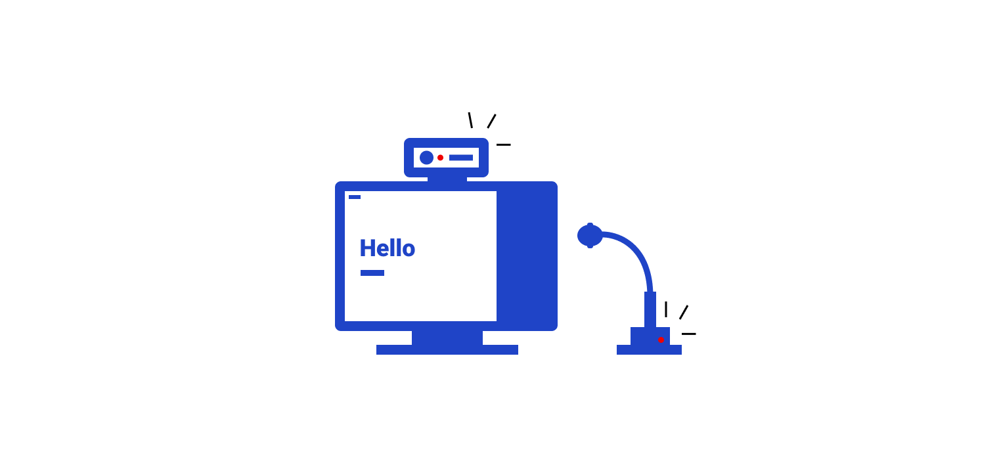
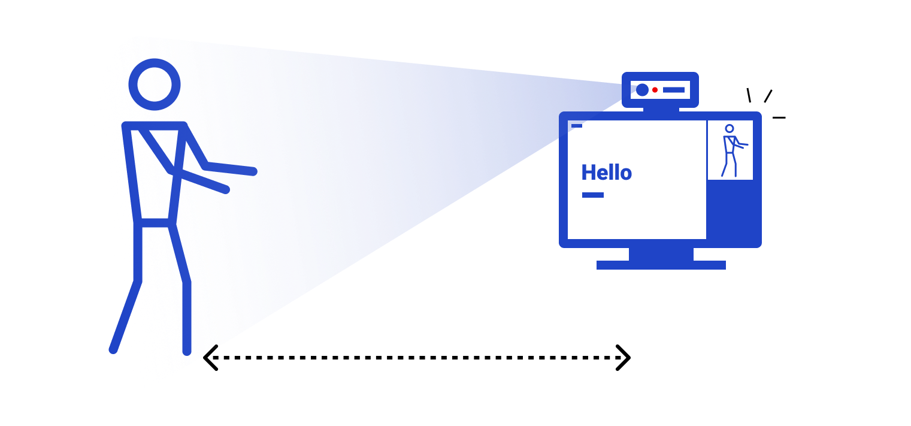
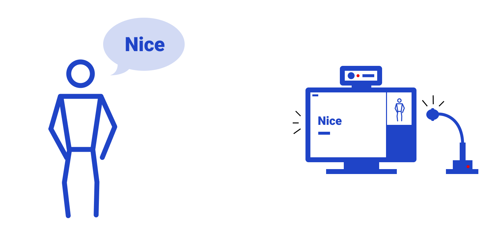
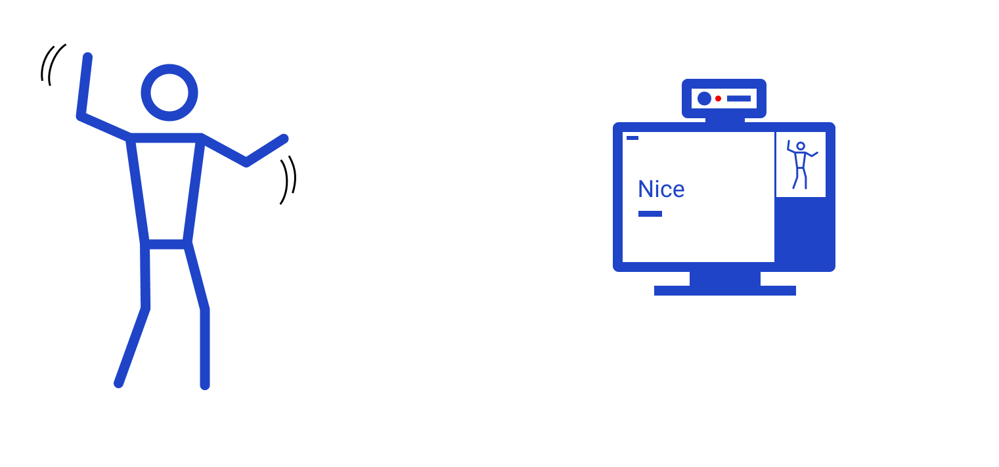

Welcome to the transfont
Introduction
People have their own accents, gestures, and handwriting. But in the digital world, they don't have their own fonts to express themselves. Transfont is a project to create an interactive typeface. Determine the appearance of the font in response to human motion. These designed fonts become personal fonts.
License
MIT
Sources


Say "Stop" for stop the motion
Step 1 : Prepare a computer with a cam and microphone.
Step 2 : Step back until you see the whole body.
Step 3 : Use a microphone to say an example word you want to see.
Step 4 : Move your body and design the font.
Say "Stop" for stop the motion
Say "Active" for active the motion
Say "Download" for download the font
ver 0.0.6
(11.01.2020)· mobile notice added
· about, how to use, update page added
· glyph size decreased
· information text added
· click keyboard icon to switch to mic
· flexible textfield size by the length of the text
· camera — slider switch button added
· able to see the joint from the cam
(11.02.2020)
· elements scale does not affect from the distance of the person
· shoulder-elbow X distance control the width
· wrist-elbow X distance control the arc
· light-thick name change to horizontal-weight
· wrist-hip Y distance control the horizontal-weight
· shoulder-hip Y distance control the middle-height
· width and weight increase and decrese slower
(11.09.2020)
· bug fixed : video and voice now active
(11.20.2020)
· About page updated
· scroll in the update page
· Side disapear when accessing additional pages
· How to Use page updated
· update page -> Update History page
· information text size increase when move back
(11.21.2020)
· bug fixed : weight style chanhged base on font-weight
· Condensed style added base on width size
· serif style added base on serif design (not for motion)
· bug fixed : download once in voice.
(12.05.2020)
· motion timer button added.
· motion timer for keyboard+cam users.
· more keyword added ("active", "begin", "freeze").
· interaction description added in how to use page
· Adjusted the ratio between the spacing between feet and the weight.
· bug fixed : typing after 'Stop' doesn't makes weird space.
· detect the browser and announced to use Chrome.
· bug fixed : timer count speed fixed.
Switch to Cam
Download